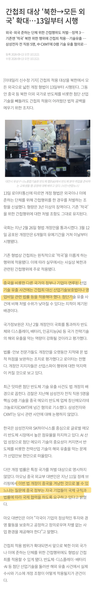
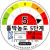
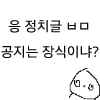

중국 제발저리네 ㅋㅋ
이제 기술 유출범도 간첩죄로 조진다

중국 제발저리네 ㅋㅋ
이제 기술 유출범도 간첩죄로 조진다
간첩죄가 기존있던 처벌에서 어느정도 더 쌘거임?
기존에는 북한 간첩 외에는 추방 밖에 안됐을거임
진즉에 했어야하는데 우방국이라는 개념 정리가 애매해서 그런것도 있을듯. 함부로 적으로 정의하기엔 우리가 너무 약자였어 시발거.
드디어
이걸 지금 한다고??
이런 법이 없었단 말이야??
대체 법 만드는 x들은 뭘 하고 있었던 거야???
민주당이고 국힘이고 다 똑같은 놈들이 광복이래 이름만 바꿔서 해쳐먹던 놈들임..
이나라도 슬슬 제 3당 지금 영 프 독처럼 제3세력에 힘이 실려야 하는데 이나라는.. 하..
민노당은 진짜 간첩.. 개혁신당 이놈들은 할배들한테 못된것만 배워처먹은 30살 구렁이들..
인재풀이 없어, 진짜 구한말에 일본이나 러시아가 침략해주십사 하던 개화파 심정을 알것 같다.
ㅇㄱㄸ 폭탄을 날리네 ㅋㅋㅋㅋ
병신인가ㅋㅋㅋㅋ 커뮤 규칙도 못 지키는 놈이 개화파 심정 ㅇㅈㄹ
광복 당시 친일파들 척결 안하고 쉴드치면서 돈받아먹던 놈들이 최초의 정당 설립자들이니
정사판으로 착각했나 4렙이


ㅋㅋㅋ 야. 제 3 세력 나오면 걔들은 뭐 청렴하고 결백하고 나라위하고 그럴거 같냐?
걔들 타락하는데 딱 1년 걸리더라.. ㅋㅋㅋ
진작에 했어야 하는거를
반대하면 간첩
윗댓 쩌는데?
법에서 북한을 콕 찝지 않는다고 빨갱이타령을 하던 어떤 읍읍때문에...
아직도 아니였다고?